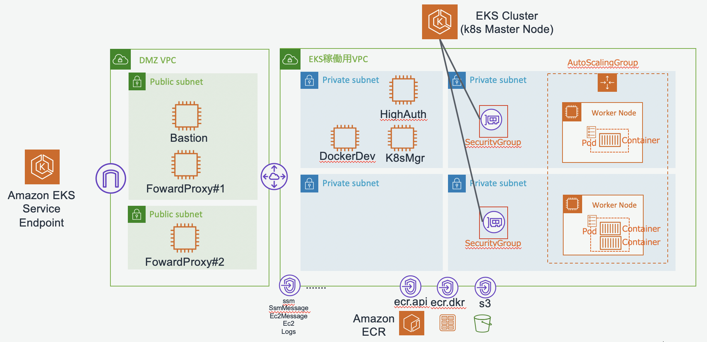

セキュアな環境でEKSを利用するための検証用環境を作成するCloudFormationテンプレートです。

下記を準備します。
git clone https://github.com/Noppy/EKSPoC_For_SecureEnvironment.git cd EKSPoC_For_SecureEnvironment
これ以降のAWS-CLIで共通で利用するパラメータを環境変数で設定しておきます。
export PROFILE=<PoC環境のAdmministratorAccess権限が実行可能なプロファイル> export REGION="ap-northeast-1" #プロファイルの動作テスト #COMPUTE_PROFILE aws --profile ${PROFILE} sts get-caller-identity
aws --profile ${PROFILE} --region ${REGION} \ cloudformation create-stack \ --stack-name EksPoc-VPC \ --template-body "file://./src/vpc-2az-4subnets.yaml" \ --parameters "file://./src/vpc.conf" \ --capabilities CAPABILITY_IAM ;
aws --profile ${PROFILE} --region ${REGION} \ cloudformation create-stack \ --stack-name EksPoc-SG \ --template-body "file://./src/sg.yaml"
aws --profile ${PROFILE} --region ${REGION} \ cloudformation create-stack \ --stack-name EksPoc-Vpce \ --template-body "file://./src/vpce.yaml"
必要なIAMロールを準備します。
aws --profile ${PROFILE} --region ${REGION} \ cloudformation create-stack \ --stack-name EksPoc-IAM \ --template-body "file://./src/iam.yaml" \ --capabilities CAPABILITY_IAM ;
aws --profile ${PROFILE} --region ${REGION} \ cloudformation create-stack \ --stack-name EksPoc-KMS \ --template-body "file://./src/kms.yaml" ;
#Bastion & DockerSG & kubectl aws --profile ${PROFILE} --region ${REGION} \ cloudformation create-stack \ --stack-name EksPoc-Instances \ --template-body "file://./src/instances.yaml"
aws --profile ${PROFILE} --region ${REGION} \ cloudformation create-stack \ --stack-name EksPoc-Ecr \ --template-body "file://./src/ecr.yaml" \ --capabilities CAPABILITY_IAM ;
#DockerDevインスタンスのインスタンスID取得 DockerDevID=$(aws --profile ${PROFILE} --region ${REGION} --output text \ cloudformation describe-stacks \ --stack-name EksPoc-Instances \ --query 'Stacks[].Outputs[?OutputKey==`DockerDevId`].[OutputValue]') echo "DockerDevID = $DockerDevID" #SSMによるOSログイン aws --profile ${PROFILE} --region ${REGION} \ ssm start-session \ --target "${DockerDevID}"
#ec2-userにスイッチ sudo -u ec2-user -i
# Setup AWS CLI REGION=$( \ TOKEN=`curl -s \ -X PUT \ -H "X-aws-ec2-metadata-token-ttl-seconds: 21600" \ "http://169.254.169.254/latest/api/token"` \ && curl \ -H "X-aws-ec2-metadata-token: $TOKEN" -s http://169.254.169.254/latest/meta-data/placement/availability-zone | sed -e 's/.$//') aws configure set region ${REGION} aws configure set output json #動作テスト(作成したECRレポジトリがリストに表示されることを確認) aws ecr describe-repositories
#dockerのセットアップ sudo yum install -y docker sudo systemctl start docker sudo systemctl enable docker sudo usermod -a -G docker ec2-user
#usermod設定をセッションに反映するためsudoし直す exit #ec2-userにスイッチ sudo -u ec2-user -i #ec2-userユーザのセカンドグループにdockerが含まれていることを確認する id #dockerテスト(下記コマンドでサーバ情報が参照できることを確認) docker info
#コンテナイメージ用のディレクトリを作成し移動 mkdir httpd-container cd httpd-container #データ用フォルダを作成 mkdir src #dockerコンテナの定義ファイルを作成 cat > Dockerfile << EOL # setting base image FROM php:8.1-apache RUN set -x && \ apt-get update COPY src/ /var/www/html/ EOL # cat > src/index.php << EOL <html> <head> <title>PHP Sample</title> </head> <body> <?php echo gethostname(); ?> </body> </html> EOL #Docker build docker build -t httpd-sample:ver01 . docker images #コンテナの動作確認 docker run -d -p 8080:80 httpd-sample:ver01 docker ps #コンテナが稼働していることを確認 #接続確認 # <title>PHP Sample</title>という文字が表示されたら成功！！ curl http://localhost:8080
REPO_URL=$( aws --output text \ ecr describe-repositories \ --repository-names ekspoc-repo \ --query 'repositories[].repositoryUri' ) ; echo " REPO_URL = ${REPO_URL} " # ECR登録用のタグを作成 docker tag httpd-sample:ver01 ${REPO_URL}:latest docker images #作成したtagが表示されていることを確認 #ECRログイン #"Login Succeeded"と表示されることを確認 aws ecr get-login-password | docker login --username AWS --password-stdin ${REPO_URL} #イメージのpush docker push ${REPO_URL}:latest #ECR上のレポジトリ確認 aws ecr list-images --repository-name ekspoc-repo
exit #ec2-userからの戻る exit #SSMからのログアウト
以下の作業は、Bastion兼高権限用インスタンスで作業します。
これは作成したEKSクラスターの初期状態でkubectlで操作可能なIAMは、EKSクラスターを作成した権限のみのためである。
#DockerDevインスタンスのインスタンスID取得 HighAuthID=$(aws --profile ${PROFILE} --region ${REGION} --output text \ cloudformation describe-stacks \ --stack-name EksPoc-Instances \ --query 'Stacks[].Outputs[?OutputKey==`BastionAndHighAuthorityId`].[OutputValue]') echo "HighAuthID = $HighAuthID" #SSMによるOSログイン aws --profile ${PROFILE} --region ${REGION} \ ssm start-session \ --target "${HighAuthID}"
#ec2-userにスイッチ sudo -u ec2-user -i
# Setup AWS CLI REGION=$( \ TOKEN=`curl -s \ -X PUT \ -H "X-aws-ec2-metadata-token-ttl-seconds: 21600" \ "http://169.254.169.254/latest/api/token"` \ && curl \ -H "X-aws-ec2-metadata-token: $TOKEN" -s http://169.254.169.254/latest/meta-data/placement/availability-zone | sed -e 's/.$//') aws configure set region ${REGION} aws configure set output json
EksAdmin環境でkubectl操作を可能にするためには、まずHightAuth環境でkubeconfigの初期設定の初期設定を行う必要がある。そのためにまずHighAuth環境でkubectlをセットアップする。
# kubectlのダウンロード curl -o kubectl https://s3.us-west-2.amazonaws.com/amazon-eks/1.22.6/2022-03-09/bin/linux/amd64/kubectl curl -o kubectl.sha256 https://s3.us-west-2.amazonaws.com/amazon-eks/1.22.6/2022-03-09/bin/linux/amd64/kubectl.sha256 #チェックサム確認 if [ $(openssl sha1 -sha256 kubectl|awk '{print $2}') = $(cat kubectl.sha256 | awk '{print $1}') ]; then echo OK; else echo NG; fi
#kubectlのパーミッション付与と移動 chmod +x ./kubectl mkdir -p $HOME/bin && mv ./kubectl $HOME/bin/kubectl && export PATH=$HOME/bin:$PATH echo 'export PATH=$HOME/bin:$PATH' >> ~/.bashrc #動作テスト kubectl version --short --client
sudo yum -y install git git clone https://github.com/Noppy/EKSPoC_For_SecureEnvironment.git cd EKSPoC_For_SecureEnvironment
aws cloudformation create-stack \ --stack-name EksPoc-EksControlPlane \ --template-body "file://./src/eks_control_plane.yaml"
#WorkerへのSSH接続設定 KEY_NAME="CHANGE_KEY_PAIR_NAME" #SSH接続する場合 #KEY_NAME="" #SSH接続しない場合はブランクを設定する EKS_CLUSTER_NAME=$(aws --output text cloudformation \ describe-stacks --stack-name EksPoc-EksControlPlane \ --query 'Stacks[].Outputs[?OutputKey==`ClusterName`].[OutputValue]' ) EKS_B64_CLUSTER_CA=$(aws --output text cloudformation \ describe-stacks --stack-name EksPoc-EksControlPlane \ --query 'Stacks[].Outputs[?OutputKey==`CertificateAuthorityData`].[OutputValue]' ) EKS_API_SERVER_URL=$(aws --output text cloudformation \ describe-stacks --stack-name EksPoc-EksControlPlane \ --query 'Stacks[].Outputs[?OutputKey==`ControlPlaneEndpoint`].[OutputValue]' ) echo " KEY_NAME = ${KEY_NAME} EKS_CLUSTER_NAME = ${EKS_CLUSTER_NAME} EKS_B64_CLUSTER_CA = ${EKS_B64_CLUSTER_CA} EKS_API_SERVER_URL = ${EKS_API_SERVER_URL} "
CFN_STACK_PARAMETERS=' [ { "ParameterKey": "ClusterName", "ParameterValue": "'"${EKS_CLUSTER_NAME}"'" }, { "ParameterKey": "B64ClusterCa", "ParameterValue": "'"${EKS_B64_CLUSTER_CA}"'" }, { "ParameterKey": "ApiServerUrl", "ParameterValue": "'"${EKS_API_SERVER_URL}"'" }, { "ParameterKey": "KeyName", "ParameterValue": "'"${KEY_NAME}"'" } ]' aws cloudformation create-stack \ --stack-name EksPoc-EksNodeGroup\ --template-body "file://./src/eks_worker_nodegrp.yaml" \ --parameters "${CFN_STACK_PARAMETERS}" ;
# kubectl用のconfig取得 aws eks update-kubeconfig --name ${EKS_CLUSTER_NAME} #kubectlコマンドからのk8sマスターノード接続確認 kubectl get svc
aws-auth ConfigMap が適用済みであるかどうかを確認します。
kubectl describe configmap -n kube-system aws-auth
Error from server (NotFound): configmaps "aws-auth" not foundというエラーが表示された場合は、以下のステップを実行してストック ConfigMap を適用します。
curl -o aws-auth-cm.yaml https://amazon-eks.s3.us-west-2.amazonaws.com/cloudformation/2020-10-29/aws-auth-cm.yaml
CloudFormationからWorkerNodeのインスタンスロールARNを取得
aws --output text cloudformation describe-stacks \ --stack-name EksPoc-IAM \ --query 'Stacks[].Outputs[?OutputKey==`EC2k8sWorkerRoleArn`].[OutputValue]'
aws-auth-cm.yaml編集
<ARN of instance role (not instance profile)>をWorkerNodeのインスタンスロールARNに修正
vi aws-auth-cm.yaml 中略 data: mapRoles: | - rolearn: <ARN of instance role (not instance profile)> 以下略
aws-authを適用します。
# aws-auth-cm.yamlの適用 kubectl apply -f aws-auth-cm.yaml # WorkerNode状態確認 kubectl get nodes --watch
EKS_CLUSTER_NAME=EksPoC-Cluster EKS_VERSION=1.22 #CloudFormationからの情報収集 EKS_SERVICE_ROLE=$(aws --output text cloudformation \ describe-stacks --stack-name EksPoc-IAM \ --query 'Stacks[].Outputs[?OutputKey==`EksServiceRoleArn`].[OutputValue]' ) EKS_KMS_KEY_ARN=$(aws --output text cloudformation \ describe-stacks --stack-name EksPoc-KMS \ --query 'Stacks[].Outputs[?OutputKey==`KeyArn`].[OutputValue]' ) EKS_CLUSTER_SUBNET1=$(aws --output text cloudformation \ describe-stacks --stack-name EksPoc-VPC \ --query 'Stacks[].Outputs[?OutputKey==`PrivateSubnet1Id`].[OutputValue]' ) EKS_CLUSTER_SUBNET2=$(aws --output text cloudformation \ describe-stacks --stack-name EksPoc-VPC \ --query 'Stacks[].Outputs[?OutputKey==`PrivateSubnet2Id`].[OutputValue]' ) EKS_CLUSTER_SG=$(aws --output text cloudformation \ describe-stacks --stack-name EksPoc-SG \ --query 'Stacks[].Outputs[?OutputKey==`EksCtlPlaneSGId`].[OutputValue]' ) #Check Parameter echo -e " EKS_SERVICE_ROLE = ${EKS_SERVICE_ROLE} EKS_KMS_KEY_ARN = ${EKS_KMS_KEY_ARN} EKS_CLUSTER_SUBNET1 = ${EKS_CLUSTER_SUBNET1} EKS_CLUSTER_SUBNET2 = ${EKS_CLUSTER_SUBNET2} EKS_CLUSTER_SG = ${EKS_CLUSTER_SG}"
#クラスター作成 aws eks create-cluster \ --name ${EKS_CLUSTER_NAME} \ --kubernetes-version ${EKS_VERSION} \ --role-arn ${EKS_SERVICE_ROLE} \ --logging ' {"clusterLogging": [ { "types": ["api","audit","authenticator","controllerManager","scheduler"], "enabled": true } ]}' \ --encryption-config ' [ { "resources":["secrets"], "provider":{ "keyArn":"'"${EKS_KMS_KEY_ARN}"'" } } ]' \ --resources-vpc-config \ subnetIds=${EKS_CLUSTER_SUBNET1},${EKS_CLUSTER_SUBNET2},securityGroupIds=${EKS_CLUSTER_SG},endpointPublicAccess=false,endpointPrivateAccess=true ;
EksAdmin環境でkubectl操作を可能にするためには、まずHightAuth環境でkubeconfigの初期設定の初期設定を行う必要がある。そのためにまずHighAuth環境でkubectlをセットアップする。
# kubectlのダウンロード curl -o kubectl https://s3.us-west-2.amazonaws.com/amazon-eks/1.22.6/2022-03-09/bin/linux/amd64/kubectl curl -o kubectl.sha256 https://s3.us-west-2.amazonaws.com/amazon-eks/1.22.6/2022-03-09/bin/linux/amd64/kubectl.sha256 #チェックサム確認 if [ $(openssl sha1 -sha256 kubectl|awk '{print $2}') = $(cat kubectl.sha256 | awk '{print $1}') ]; then echo OK; else echo NG; fi
#kubectlのパーミッション付与と移動 chmod +x ./kubectl mkdir -p $HOME/bin && mv ./kubectl $HOME/bin/kubectl && export PATH=$HOME/bin:$PATH echo 'export PATH=$HOME/bin:$PATH' >> ~/.bashrc #動作テスト kubectl version --short --client
# kubectl用のconfig取得 aws eks update-kubeconfig --name ${EKS_CLUSTER_NAME} #kubectlコマンドからのk8sマスターノード接続確認 kubectl get svc
aws-auth ConfigMap が適用済みであるかどうかを確認します。
kubectl describe configmap -n kube-system aws-auth]
Error from server (NotFound): configmaps "aws-auth" not foundというエラーが表示された場合は、以下のステップを実行してストック ConfigMap を適用します。
curl -o aws-auth-cm.yaml https://amazon-eks.s3.us-west-2.amazonaws.com/cloudformation/2020-10-29/aws-auth-cm.yaml
CloudFormationからWorkerNodeのインスタンスロールARNを取得
aws --output text cloudformation describe-stacks \ --stack-name EksPoc-IAM \ --query 'Stacks[].Outputs[?OutputKey==`EC2k8sWorkerRoleArn`].[OutputValue]'
aws-auth-cm.yaml編集
<ARN of instance role (not instance profile)>をWorkerNodeのインスタンスロールARNに修正
vi aws-auth-cm.yaml 中略 data: mapRoles: | - rolearn: <ARN of instance role (not instance profile)> 以下略
aws-authを適用します。
# aws-auth-cm.yamlの適用 kubectl apply -f aws-auth-cm.yaml # WorkerNode状態確認 kubectl get nodes --watch
EksAdminのロールをk8sのマップに追加
#k8s管理者用のIAMロールのARN取得 aws --output text cloudformation describe-stacks \ --stack-name EksPoc-IAM \ --query 'Stacks[].Outputs[?OutputKey==`EC2kubectlRoleArn`].[OutputValue]' #aws-auth ConfigMapを開く kubectl edit -n kube-system configmap/aws-auth